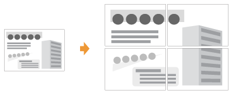
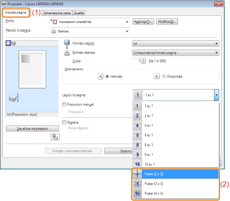

È possibile ingrandire e dividere l'immagine di una pagina singola e stamparla su più fogli di carta. Unendo insieme queste stampe è possibile creare un poster.

1
Aprire la schermata delle impostazioni del driver della stampante.
2
Specificare l'impostazione per la stampa del poster.
|
(1)
|
Selezionare la scheda [Imposta pagina].
|
|
(2)
|
Selezionare [Poster [N x N]] (N = 2, 3, 4) da [Layout di pagina].
|

 Se non è possibile specificare l'impostazione Se non è possibile specificare l'impostazione |
 "
"3
Fare clic su [OK].
 |
Per i dettagli relativi alla procedura di stampa di base, vedere "Procedura di stampa di base".
|